Vintage sockets and lightswitches
The design and styling of sockets and lightswitch types in Italy has varied considerably throughout the years. Indeed, while in other countries generally their styling hasn't changed very much, in Italy much more attention has been paid to their design, which has thus changed quite a bit over time according to the style of the period.
Sockets, lightswitches and various other devices meant to go in a wall box are generally known as "series".
Various series have been released over the years by various brands, each with a different appearance.
A trendsetter in this field was definitely BTicino, whose styling influenced and was cloned by many other brands,
as you'll see shortly.
Surface-mount items
The earliest types of sockets and lightswitches were surface-mount: meant to be screwed directly onto the wall. This makes sense, as electricity was still in its early days back then and all houses would have had to be retrofitted.
While this style of mounting fell out of fashion in favour of wallboxes, especially as houses started being built with electrical installations in mind, they were and still are available for purchase. Surface-mount items are more of an eyesore, but they make up for it, in certain cases, by their flexibility and ease of installation.
Ceramic power socket
Rating: 6A 250V
This style of power socket was used in the earliest types of electrical installations. The entire device is made of ceramic, with connections made on the back and wires (likely rubber or cloth insulated) arriving from the top, with two holes for them bring present in the ceramic body.
As with most early sockets, the metal contacts used here are hollow tubes, with no pressure applied to the plug; this was in the era of plugs using split pins in order to provide a solid connection. As such modern plugs with solid pins aren't able to form a solid connection to the socket, with very litle force being necessary to disconnect them.
 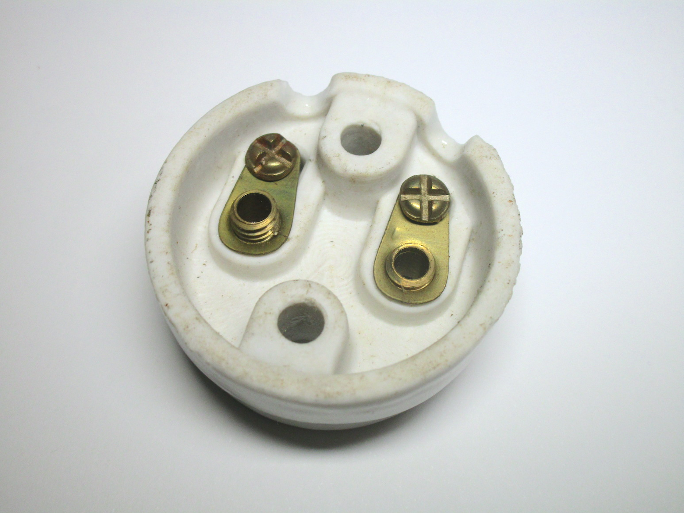
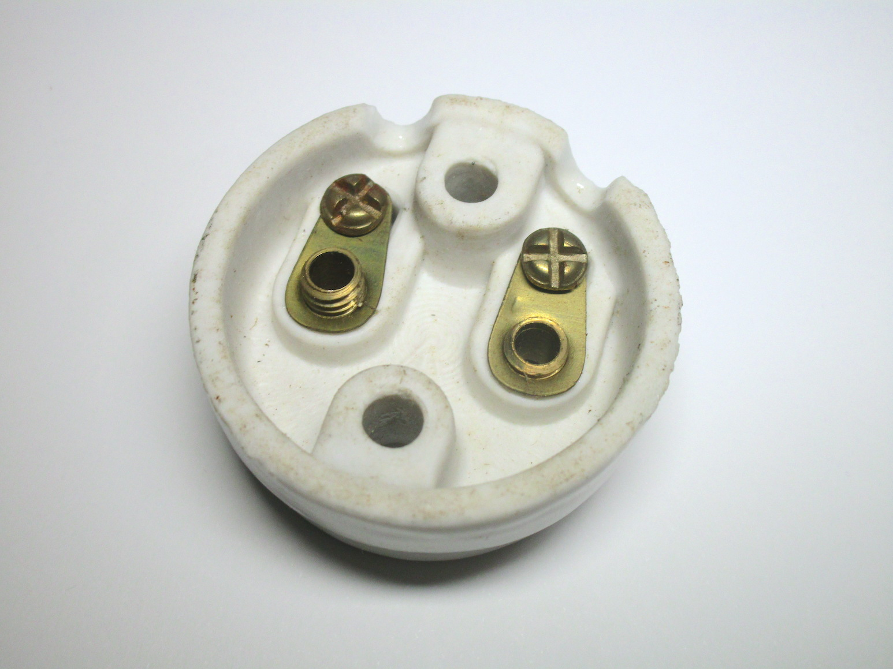
{kind=link}
Fused ceramic power socket
Rating: 6A 250V
This power socket, despite having the same rating as the previous one, is quite a bit thicker. This is because it contains two rewireable fuses inside, one for each contact (a practice known as double-pole fusing, which was quite common back in the day), in order to protect the socket.
This practice was somewhat popular in the very early days of electricity, but didn't last particularly long after that. The idea was that you'd have a single high-current (for the time) circuit for the entire house, with each socket individually fused. This would have limited the inconvenience of a blown fuse to the specific socket, though obviously replacing a fuse inside a socket next to the floor is quite a bit more inconvenient than having all the fuses in a single spot.
 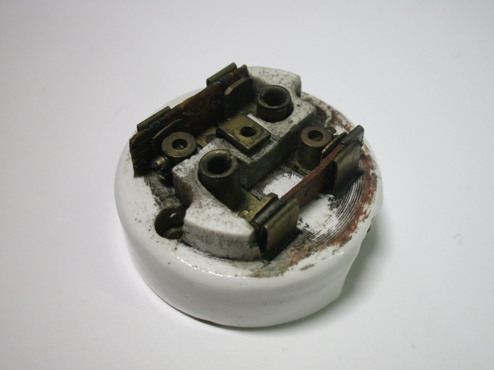
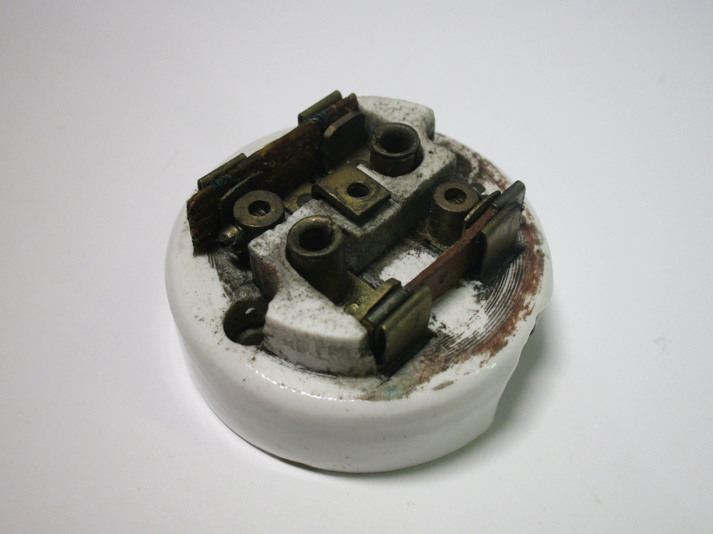
{kind=link}
10A ceramic lightswitch
Rating: 10A 250V
This ceramic lightswitch is an example of an early style of mechanism for switching lights on and off: instead of having some sort of lever as a control, the lightswitch instead uses a rotating knob, which when turned in a clockwise direction toggles the power to the lights.
This style of mechanism was quite common on very early lightswitches, and was even present on some later ones made of bakelite, though it is generally mainly found on ceramic ones. While the main body of this switch is indedd made of ceramic, the front is made out of metal, with an insulating coating on the back in order to prevent it from becoming live.
Taking apart this device is quite easy and simply requires turning the control knob in a counter-clockwise direction in order to unscrew it - this is the only thing keeping the front cover in place. Of course, this quite dangerous design means that it's quite easy to access the live terminals without any tools.


German-made bakelite lightswitch
Rating: 6A 250V
This style of bakelite lightswitch was fairly common before electrical items started to move from being surface-mount to being installed in wall-boxes; as with some other early lightswitches, it uses a mechanism that looks similar to switches used for hobby electronics, or to the American-style ones.
Notably, the connections and screw points on this one are accessible by unscrewing by hand the front cover - an obvious safety issue, as that's very easy to do and immediately exposes the live terminals.
 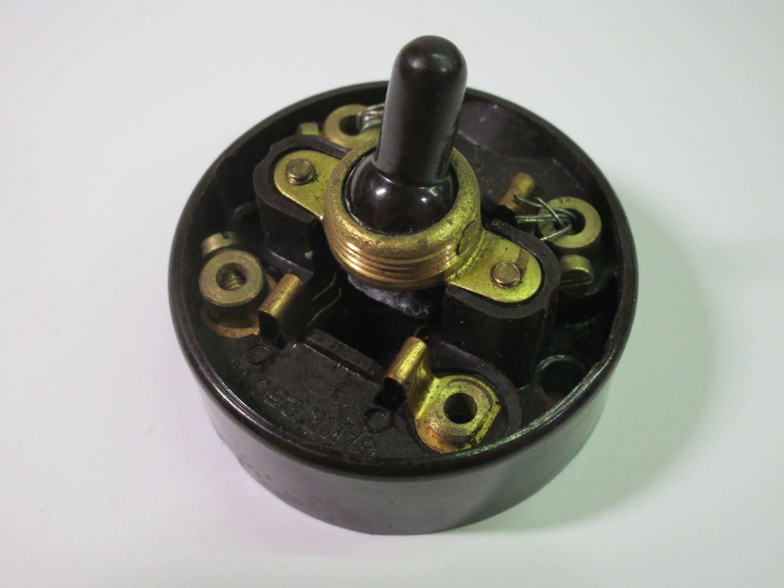
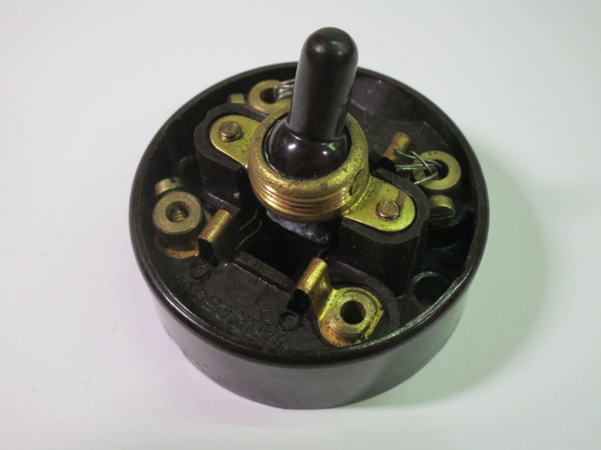
{kind=link}
Vimar 10A socket
Rating: likely 10A 250V
This is a later style of surface-mount socket, made by the company Vimar. It's built very simply: the body is made of plastic and there's a ceramic section on the back that holds the metal contacts in place. Holes have been cut out in the plastic to make space for the wires.
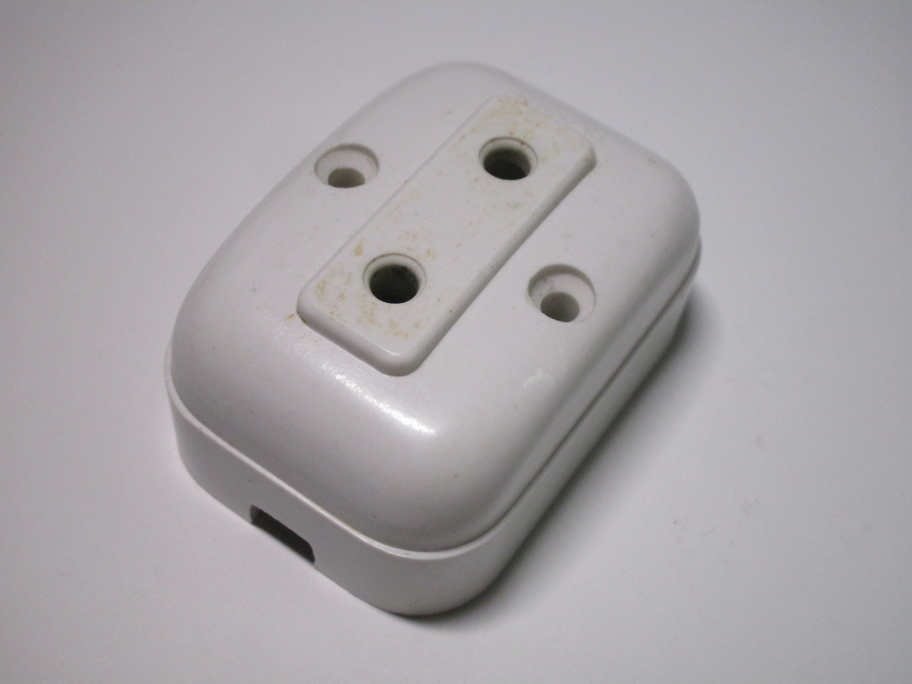 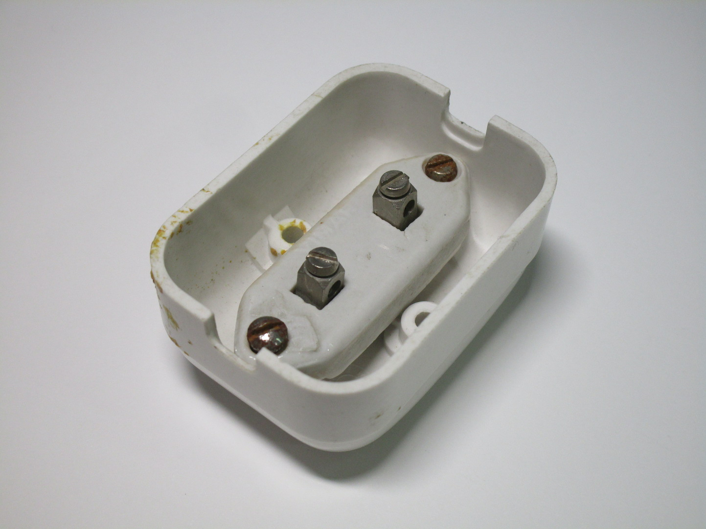{kind=link}
{kind=link}
Devices for round boxes
The round box was the earliest type of wall box in use in Italy (prior to that wall-mounted items were used instead). This style of box is still used in other European countries, however in Italy it was superseded by rectangular boxes.
The way devices mount to this style of box is quite interesting, and different from modern ones: the box itself doesn't have any screw holes, instead the item is held with arms that expand outwards and grab onto the sides of the box.
Early electrical devices
 Early devices meant for wallboxes were often a more premium alternative to ones that mounted externally to the wall,
which was at the time much more common (and presumably easier to retrofit).
Early devices meant for wallboxes were often a more premium alternative to ones that mounted externally to the wall,
which was at the time much more common (and presumably easier to retrofit).
Compared to other models shown later, whose styling was designed to be visible and look good inside a room, these early examples instead did the opposite, trying their best to be hidden from sight. As such, they were often made with a clear (glass, and later plastic) front piece, to be easier to conceal behind a wallpaper, with only the bare miniumum being visible.
Early glass power socket
Rating: unknown
Likely the oldest power socket in my collection, this device is an excellent example of how these old sockets used to work. It's made of various materials: the core frame is metal, with the contacts held in a ceramic piece, for insulation. The front cover is glass and held with two bakelite pieces which screw into the contacts of the socket.
Of course, the fact that the front cover is only held by those bakelite pieces, which are screwed by hand, means that safety is very low, as anyone would be able to remove the front cover and reveal the live contacts.
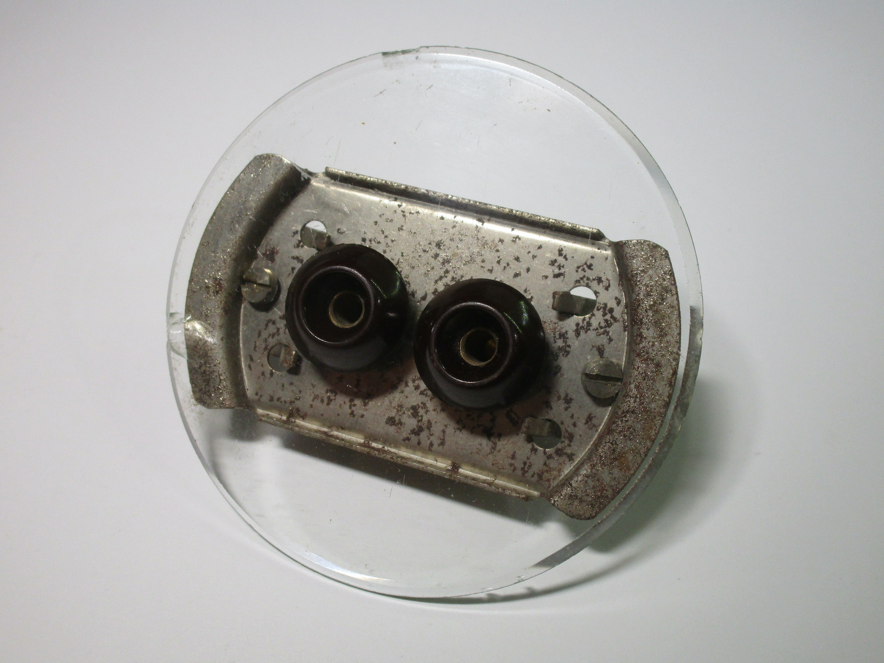{kind=link}


Glass doorbell switch by BTicino
Rating: 6A 250V
This doorbell pushbutton is made in a similar way to the socket shown above.
Notably, the date code on the device is of 1952, evidently this style of device was still sold back then.
{kind=link}
 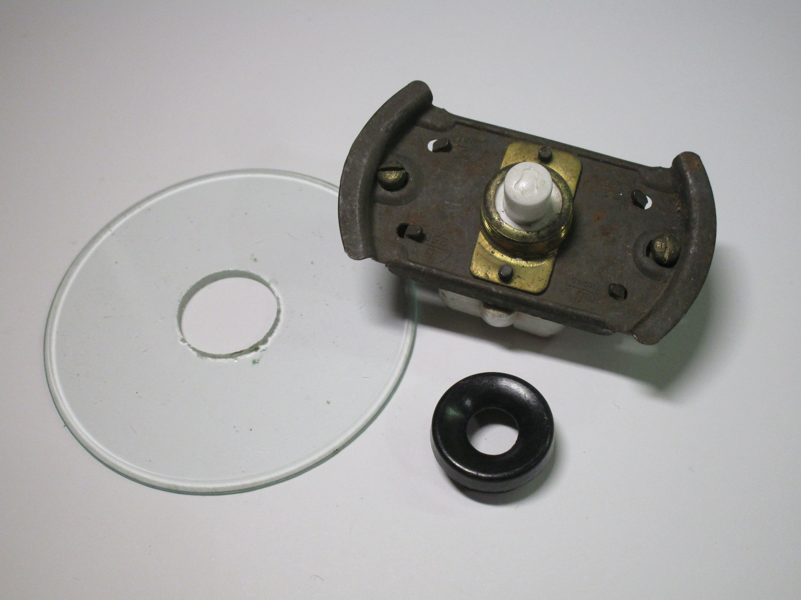
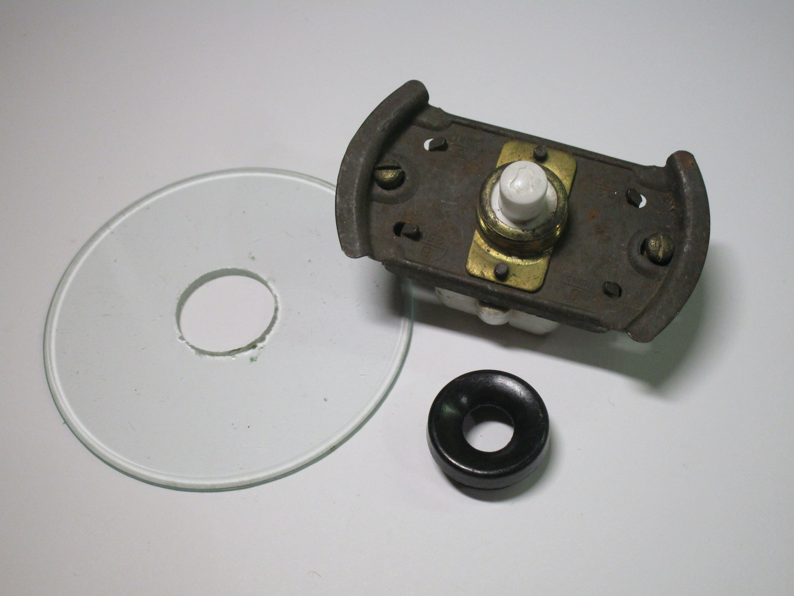
{kind=link}
Glass and bakelite lightswitch
Rating: 6A 250V
This lightswitch, while still being of the style with a glass surrounding meant to be hidden behind a wallpaper, has a large bakelite piece on the front (which is where the screws are).
Notably, the style of switch used is very similar to the American-style ones, even more so than other lever-style switches shown earlier.
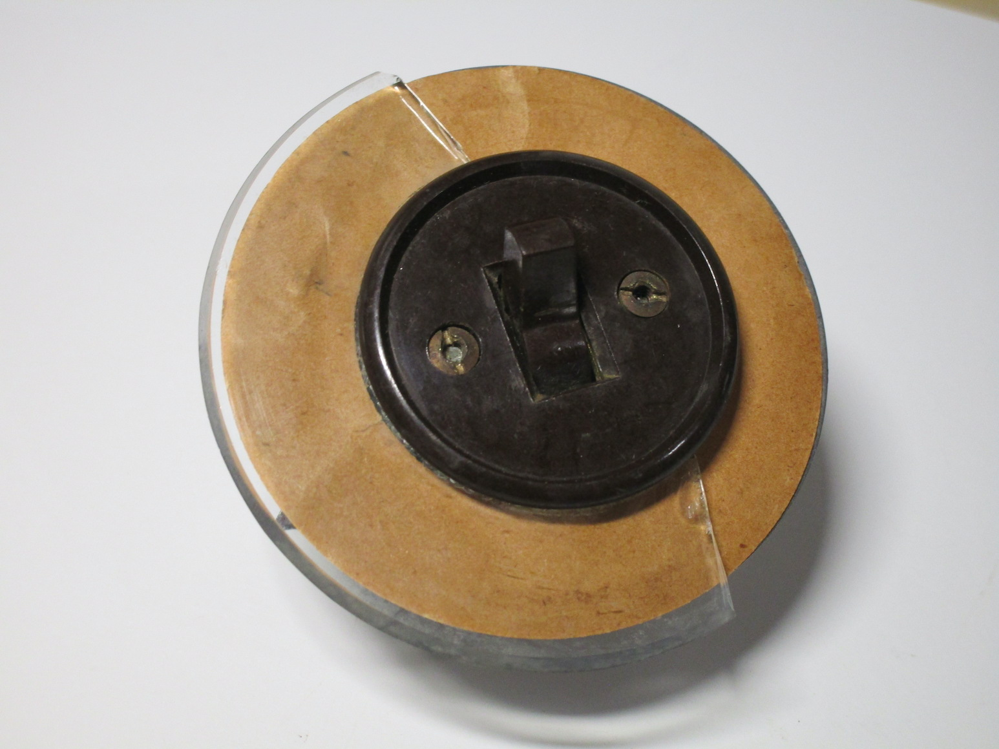{kind=link}
 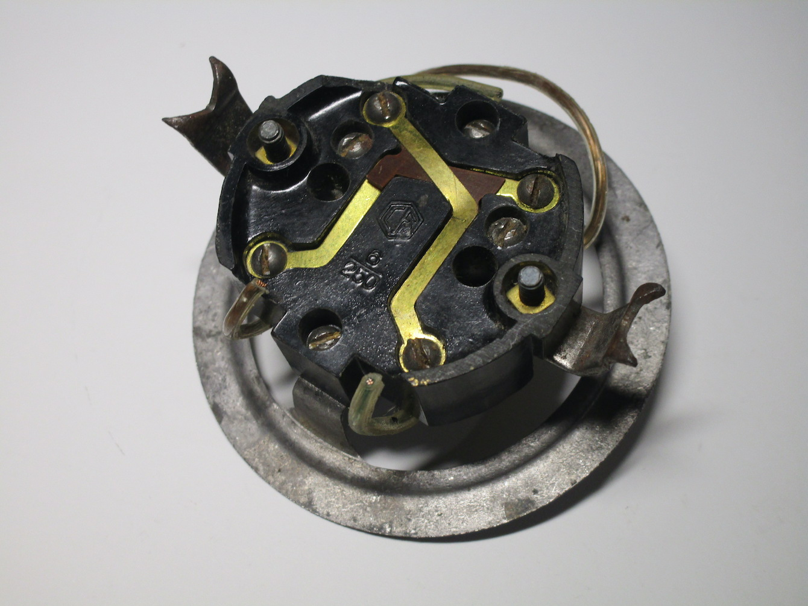
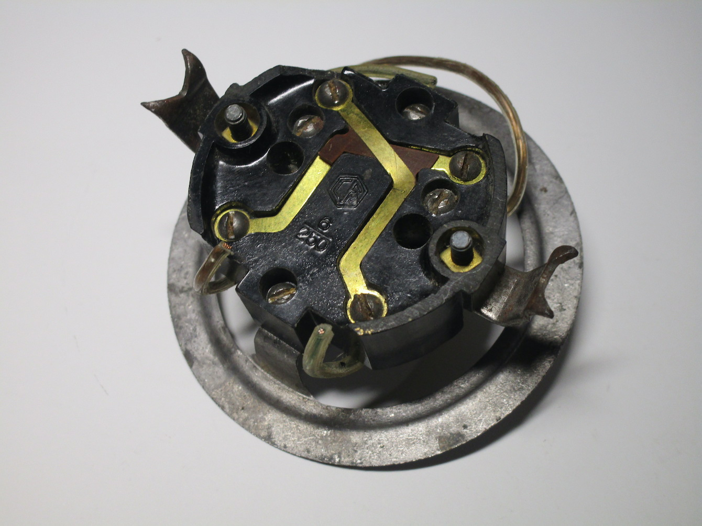
{kind=link}
Lightswitch with twist-on control
This lightswitch is similar to the ceramic one shown earlier in that it also has a knob you turn to toggle the lights on or off. Compared to the other one, however, this one can be turned in either direction, as the knob is held to the body of the lightswitch with a screw.
Unfortunately this particular example is in quite a rough shape, as it's missing the front glass plate and one of the brass contacts inside. Thankfully, the mechanism itself still works perfectly.
Early three-phase 15A socket
Rating: likely 15A 380V
As indicated by the front informative cardboard piece (which likely means that this socket was never actually installed), it's made by the company Saigir (?) from Trieste, and it's a three-phase socket with earth connection.
As with the devices shown earlier, this socket is installed by removing the - in this case three - bakelite
pieces surrounding the contacts and then removing the acrylic cover - notably, this is made of acrylic rather than
glass.
After having removed the front, the mounting screws are exposed. Wiring can be done on the back, with the four
(three phases + earth) connections being housed in a large ceramic piece.
{kind=link}
{kind=link}
{kind=link}
Dual lightswitch, unknown brand
Rating: 6A 250V
This double lightswitch follows the same general style of installation as the socket shown earlier, although the front cover plate is sadly missing. It's not clear who actually built this socket, although the distinctive logos present on the back suggest that it might perhaps also have been built by the same company, or by another one based in Trieste.
As with some of the other lightswitches shown earlier, this uses American-style levers to turn the lights on or off, compared to the style of mechanism used in later ones.
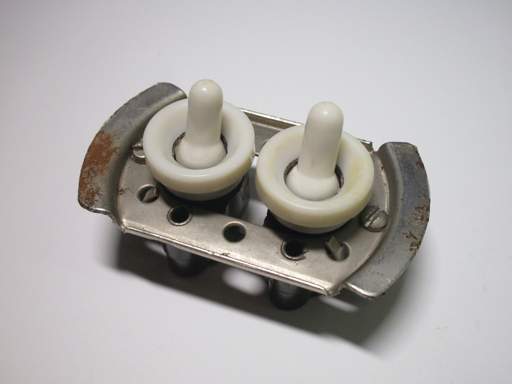 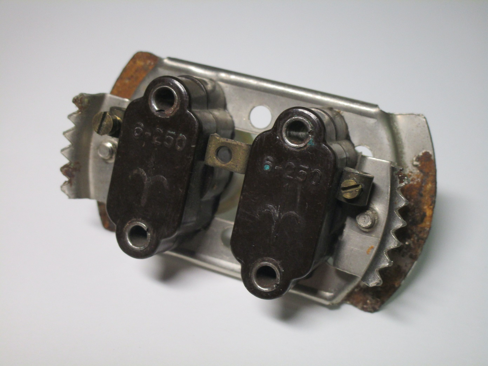{kind=link}
{kind=link}
The BTicino Domino series
Released in the 50s, the Domino series was hugely popular and used in a lot of houses built, or retrofitted to
have electricity, during the decade.
Their design was quite interesting, as they were generally made out of a single moulded piece of bakelite/plastic,
which (in the case of the sockets) formed both the body of the socket itself and the thing that screwed into the
wall.
{kind=link}
{kind=link}

On the back there are, as expected, the wiring connections. They are formed of screw terminals (thus, capable of also accepting stranded wire) plainly exposed on the back and very easy to touch once the socket's removed from the wall.


The BTicino Piuma series
The Piuma series is interesting because, while it is still based on a non-modular design, it introduced the idea of changeable cover plates, and its design language is in a way the predecessor to the one used in the Magic series.
Cover plates are of two types, depending on the device, and because of that were available in a variety of styles - this was very uncommon before as most electrical accessories didn't have changeable cover plates.
Notably, despite the frame being metal and metal cover plates being commonly used, an earth terminal is not present.
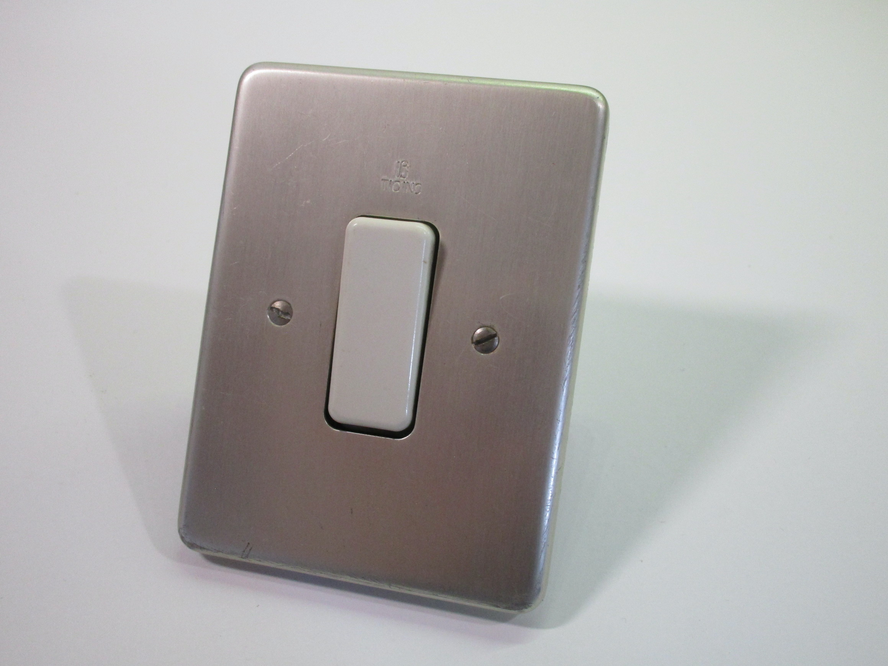 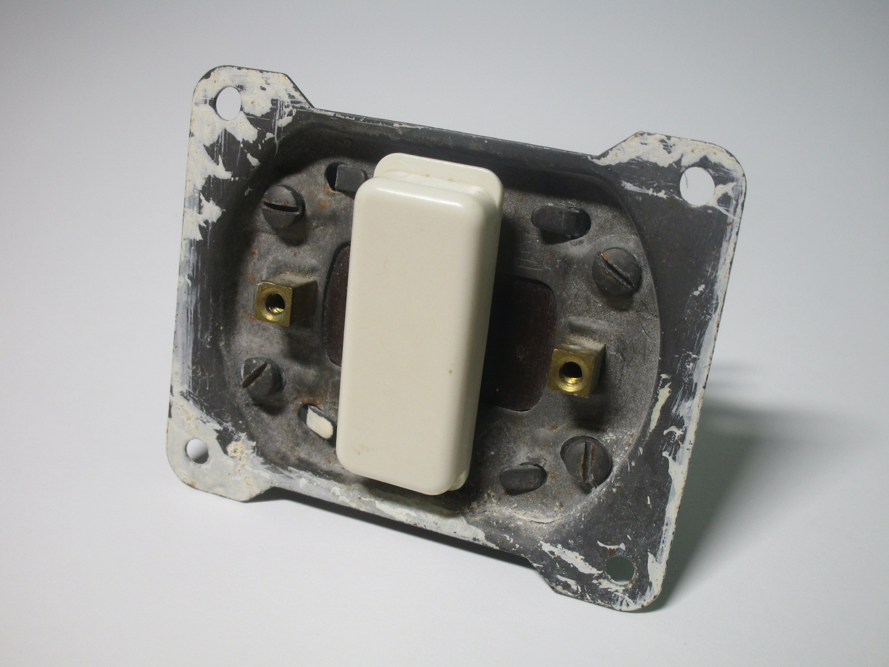{kind=link}
{kind=link}

Newer Bticino Domino series socket
Rating: 16A 250V
The Domino series continued being sold for a long time, with devices such as this socket conforming to much more modern safety standards - it has safety shutters and a safer style of screw terminals on the back - and having newer features, such as being Bipasso (that is, accepting both 10 and 16A plugs), something not present on the original series.
In general, this socket is very much a (relatively) modern device that just happens to have the Domino name, a useful replacement for people with existing installation that may want to replace some of their existing devices while having them fit in with the rest.
 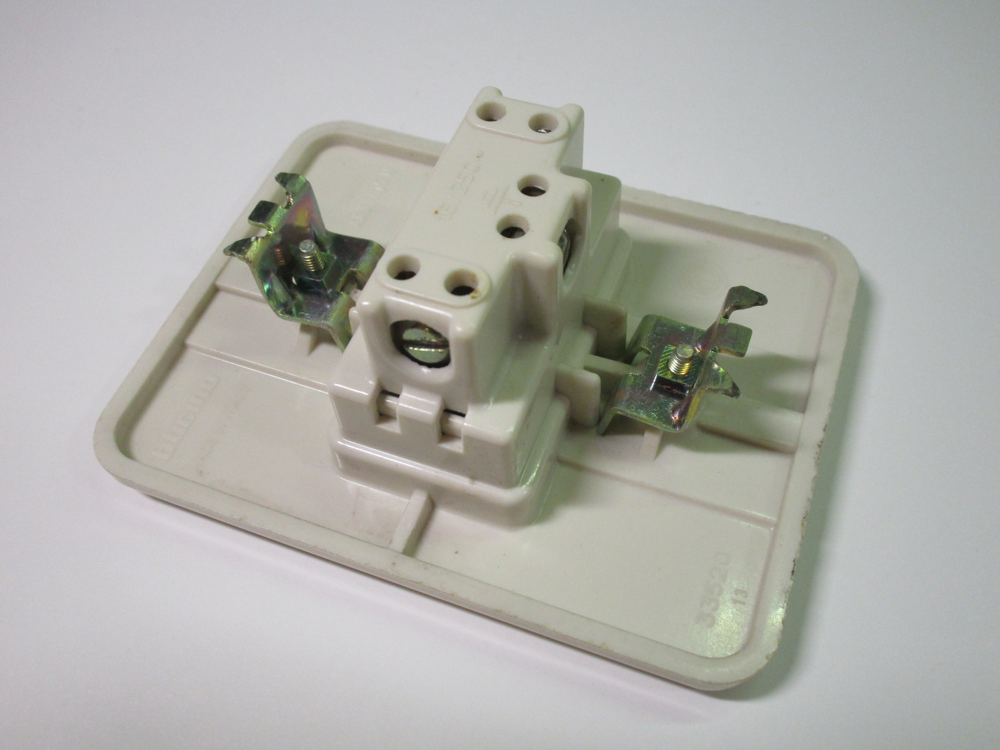
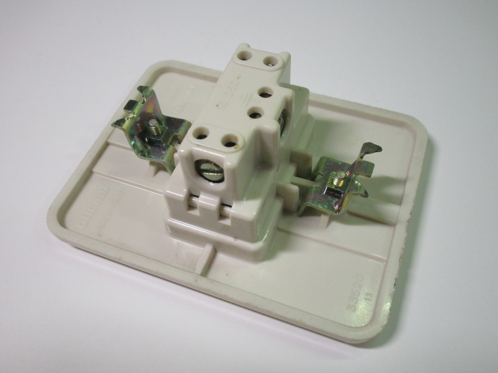
{kind=link}
Other later round box devices
 While Italy switched in the 60s-70s to the rectangular box standard, items for round boxes were and still continue
to be made, primarily as replacements for older houses, though it's still possible to install round boxes in a
house nowadays if so desired.
While Italy switched in the 60s-70s to the rectangular box standard, items for round boxes were and still continue
to be made, primarily as replacements for older houses, though it's still possible to install round boxes in a
house nowadays if so desired.
This, combined with the fact that the switch didn't happen overnight, means that even series made with rectangular boxes in mind were also available in round box versions, and this continues to be the case nowadays.
Devices for rectangular boxes
With the Magic series came the introduction of rectangular boxes, inspired (in practice, directly copied) from the US ones. These are available in different sizes, with the smallest and most common being the 503, which holds 3 modules.
As modular items became commonplace and used in new installations, so too did the new boxes become standard, going hand in hand with the introduction of modular devices, especially since they could hold more modules than the round boxes, which could only hold a maximum of two.
BTicino Magic modular devices
The Magic series introduced the concept of modular devices - instead of having sockets or other items in a single
block, everything was instead broken into multiple modules which then fit into a support plate, which enabled for
far greater flexibility than was possible before.
This system was incredibly popular and deeply influenced the way electrical installations are built nowadays,
in fact it is still possible to buy brand new parts for it even today, and several clones were made.
{kind=link}
{kind=link}
While the system did see some changes over the course of its life, mainly in the type of support plate, the way it is installed remained the same: the modules clip into place onto a support plate, then they can be wired up, the entire thing is screwed into the wall and a cover plate is added.

 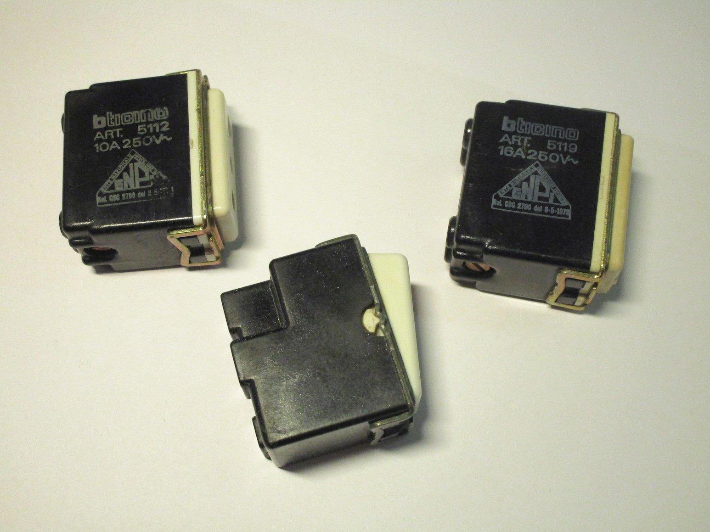
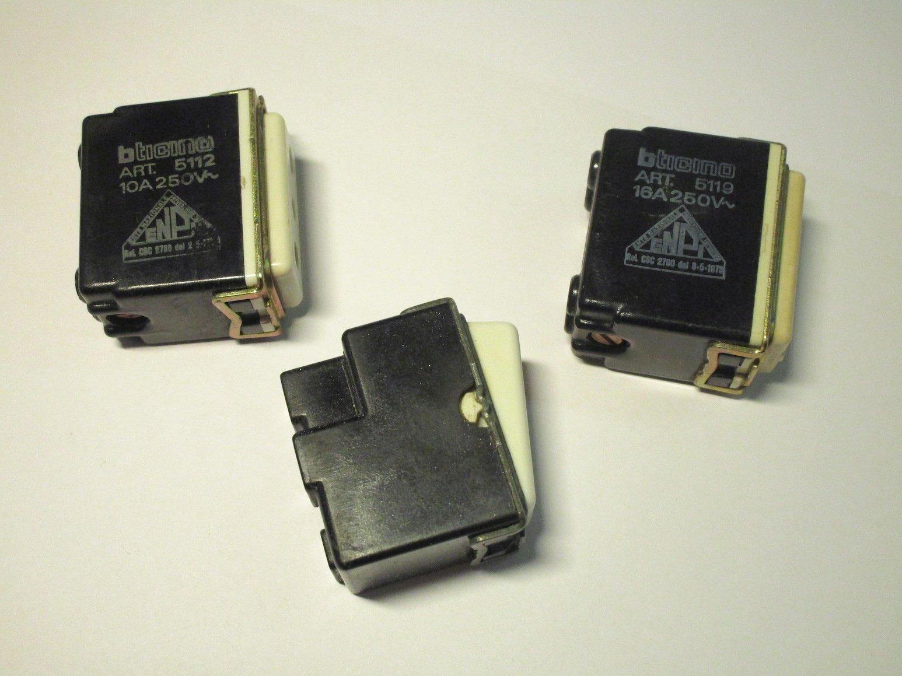
{kind=link}
 Modules were available for all sorts of functions, not just sockets or lightswitches: buzzers, relays, TV aerial
connections, fuses, breakers and indicator lamps is just a small selection of what was (and still is) available.
Thus, all sorts of combinations were possible, depending on the specific needs of the installation.
Modules were available for all sorts of functions, not just sockets or lightswitches: buzzers, relays, TV aerial
connections, fuses, breakers and indicator lamps is just a small selection of what was (and still is) available.
Thus, all sorts of combinations were possible, depending on the specific needs of the installation.
Notably, this is also the origin of the Magic plugs and sockets, as explained previously. The name Magic actually was never officially used for those styles of plugs, although they are colloquially referred to as such because of the "MAGIC" wording on the front of the sockets.
Non-modular BTicino lightswitches
Rating: 10A 250V
While the vast majority of rectangular box devices were modular, there were also some uncommon devices that were not. This is one of them, a set of three lightswitches from an unknown series from BTicino.
The exterior appearance is very similar to the Magic series, though with a plastic surround around each switch. A look around the back reveals that the switches themselves do appear to be modules of some sort, though the way they're held (and the lack of a model number on the faceplate) seems to suggest that these came like this from the factory.
It is likely that this would have been a cheaper alternative to the Magic series, as that would have required buying separate modules, a support plate and a faceplate.
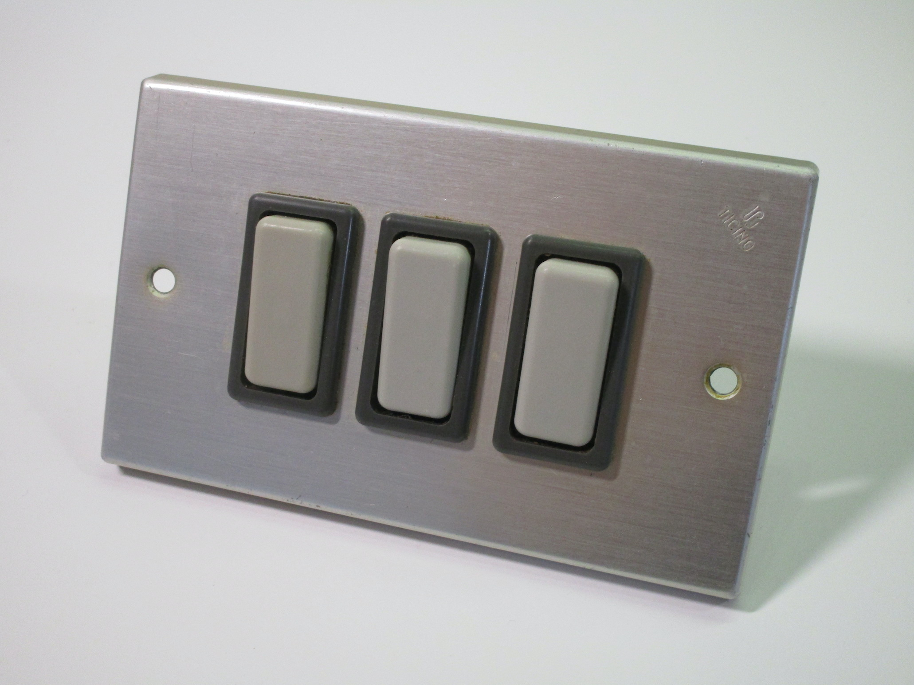 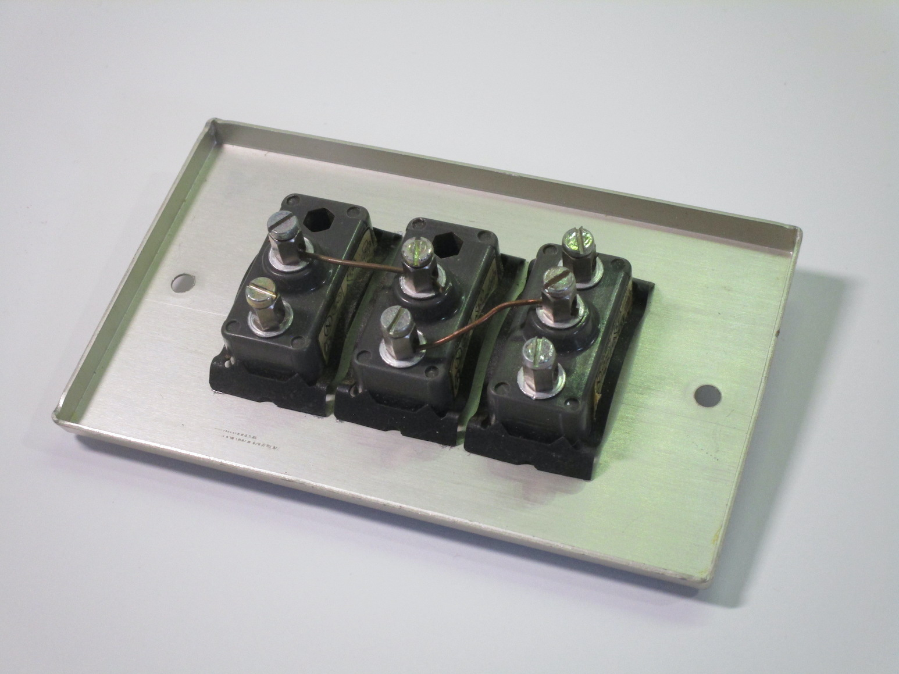 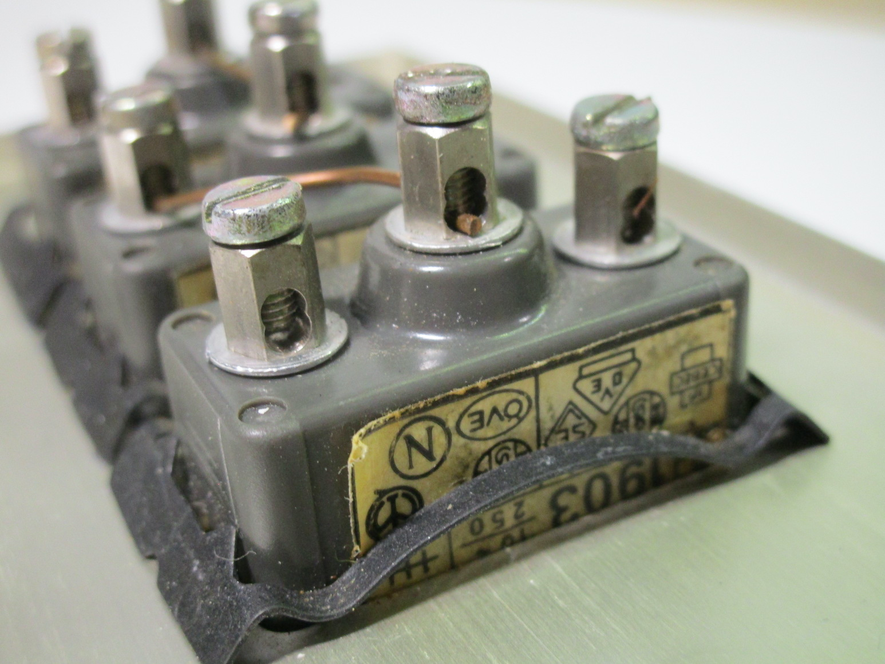{kind=link}
{kind=link}
{kind=link}
BTicino Dogic series
Rating: 6A (lightswitch)/16A (socket), 250V
These two devices initially looked very much like part of another non-modular series, which is the main reason why I got them, but after looking up their model numbers online I was able to find out that they are indeed part of a modular series by Bticino, the Dogic series.
These definitely seem like part of a budget lineup, with the faceplate doubling as a support plate (which means that the screws are visible from the front) and the overall construction feeling much less substantial than the contemporary Magic series, or really any other device made by them.
 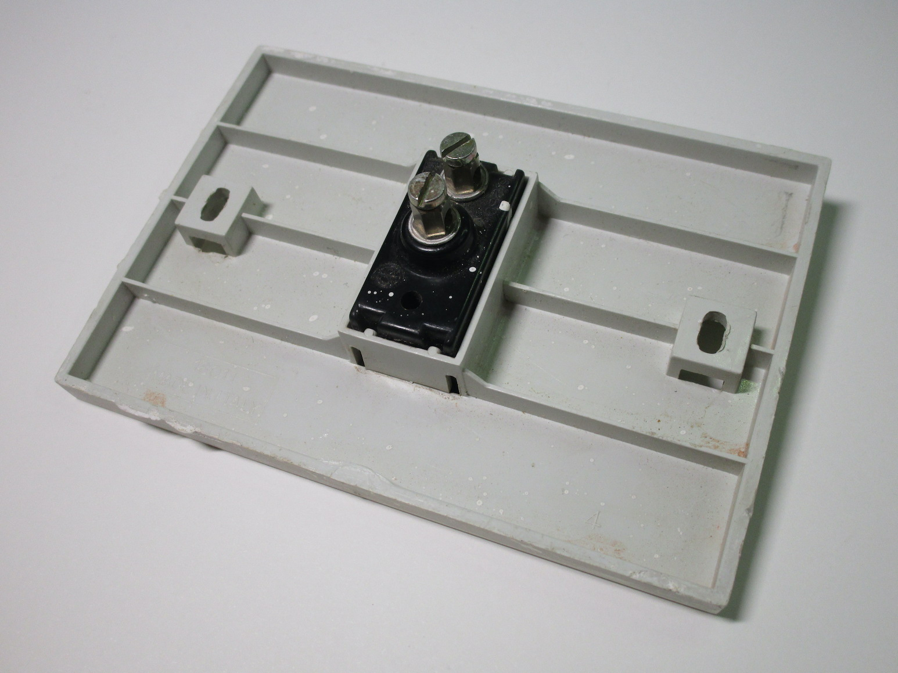
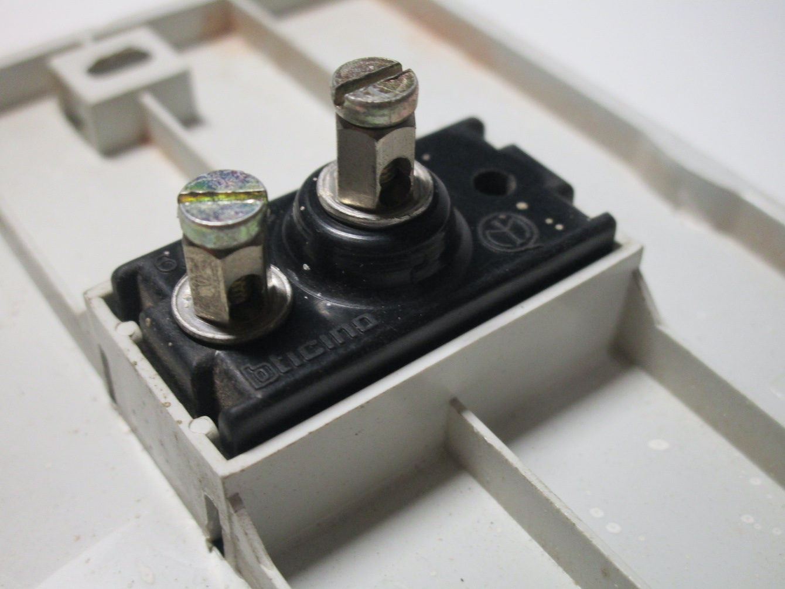
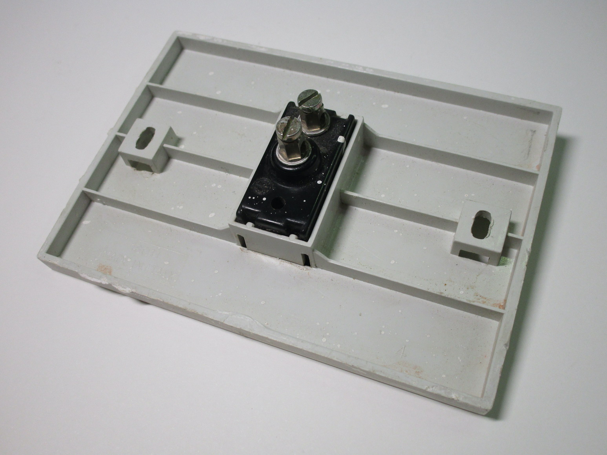
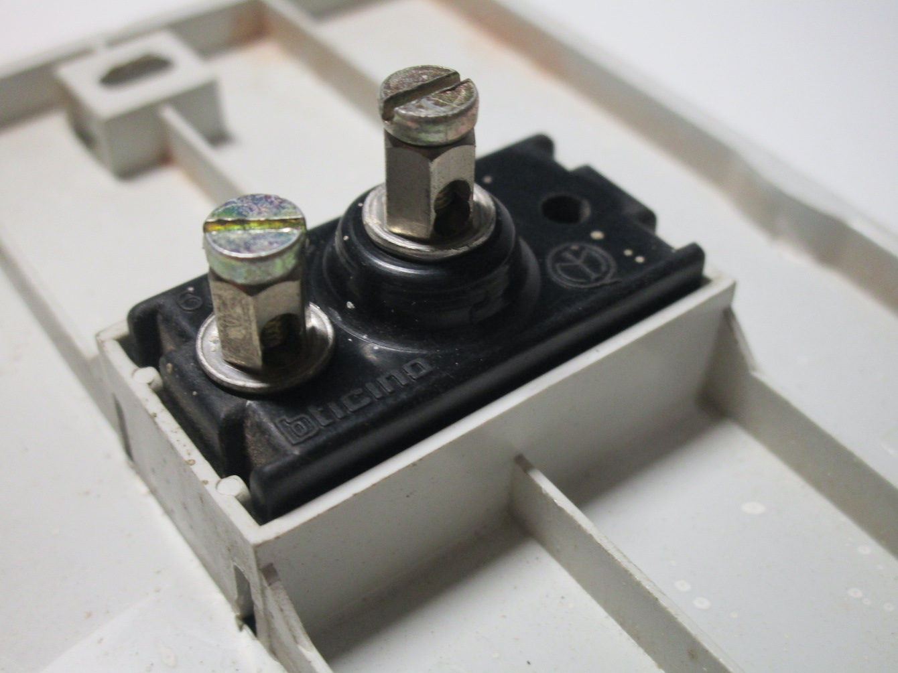
{kind=link}
{kind=link}
Interesingly enough, the socket and lightswitch use a different style of wire terminals: while the latter
uses the older, and more unsafe, style (as seen for example on the Domino series), the socket has one covered on
the sides by plastic, in order to protect from accidental contacts.
This could have perhaps reult from a change in safety standards while this series was being sold, as this style of
screw terminal isn't seen on other newer devices.
{kind=link}
 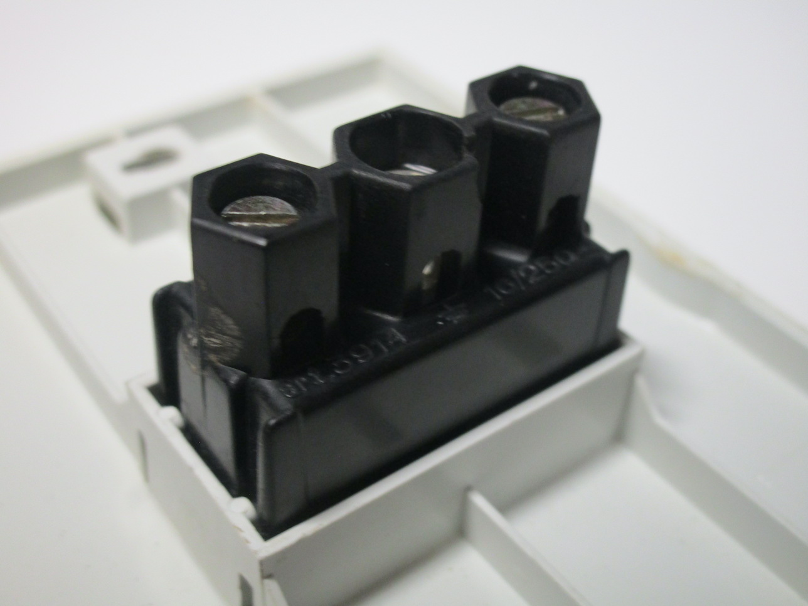
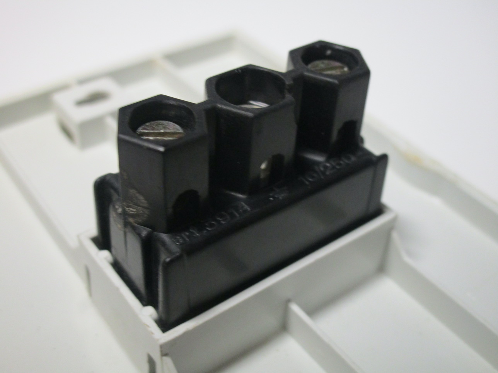
{kind=link}
Other types of sockets
"Marbo" fused multi-socket device
Rating: 15A 380V
This device accepts various types of plug: it has a small type L socket, a big type L socket, and two three-phase
ones.
It would have likely been useful in a workshop or factory where various types of equipment may have been connected.
The sockets have a maximum wattage rating written next to them: 500W for the small type L one, 800W for the large
one, and 1000W for each three-phase socket.
The device also has a main on/off switch (with a label instructing the user to switch the power off before removing a plug, something I'm sure nobody ever actually did), and fuses - the idea probably was that you'd have a bunch of these devices all connected to a single high amperage circuit, and then each one was fused down individually.
It's interesting to note that the small type L socket is labelled as for "lighting", and it has separate
terminal connections, which also means that it wouldn't have been conencted to the fuses.
I assume this might have been so that you could easily connect this to a separate lighting circuit for the
building (with a smaller fuse rating), or maybe for a cheaper lighting supply (I'm not sure if factories of the
time would have had such a thing like residential buildings did).